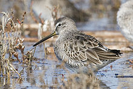
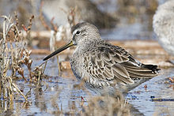

| Short-billed Dowitcher | |
|---|---|
|  | |
| Conservation status | |
| Binomial name | |
| Limnodromus griseus (Gmelin, 1789) |
| Short-billed Dowitcher | |
|---|---|
|  | |
| Conservation status | |
| Binomial name | |
| Limnodromus griseus (Gmelin, 1789) |
The Short-billed Dowitcher (Limnodromus griseus) like its congener the Long-billed Dowitcher, is a medium-sized, stocky, long-billed shorebird in the family Scolopacidae. It is an inhabitant of North America, Middle America, and northern South America.[1] It is strongly migratory; it completely vacates in breeding areas during the snow-bound months.[2] This species favors a variety of habitats including tundra in the north to ponds and mudflats in the south. It feeds on invertebrates often by rapidly probing its bill into mud in a sewing machine fashion.[3] It and the very similar Long-billed Dowitcher were considered one species until 1950.[4] Field identification of the two American Limnodromus remains difficult today. However, the two differ in subtle points of plumage and they differ more substantially in vocalizations. The names of American dowitchers are misleading, as there is much overlap in their bill lengths.[3][4] Only a small percentage can be identified by this character alone.[4]
The body of adults is dark brown on top and reddish underneath. The tail has a black and white barred pattern. The legs are a yellowish color. There are three subspecies with slight variations in appearance:
None of these combines the reddish belly and barred flanks of the Long-billed Dowitcher. The winter plumage is largely grey.
Their breeding habitat includes bogs, tidal marshes, mudflats or forest clearings south of the tree line in northern North America. L. g. griseus breeds in northern Quebec; L. g. hendersoni breeds in north central Canada; L. g. caurinus breeds in southern Alaska.
These birds nest on the ground, usually near water. Their nests are shallow depressions in clumps of grass or moss, which are lined with fine grasses, twigs and leaves. They lay four, sometimes three, olive-buff to brown eggs. Incubation lasts for 21 days and is done by both sexes.
The downy juvenile birds leave the nest soon after hatching. Parental roles are not well known, but it is believed the female departs and leaves the male to tend the chicks, which find all their own food.
They migrate to the southern United States and as far south as Brazil. This bird is more likely to be seen near ocean coasts during migration than the Long-billed Dowitcher. This species occurs in western Europe only as an extremely rare vagrant.
These birds forage by probing in shallow water or on wet mud. They mainly eat insects, mollusks, crustaceans and marine worms, but also eat some plant material.
The call of this bird is more mellow than that of the Long-billed Dowitcher, and is useful in identification, particularly of the difficult adult plumages.

{kind=link}
{kind=link}